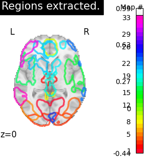
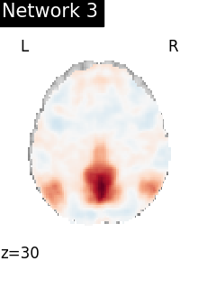
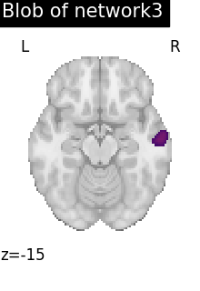
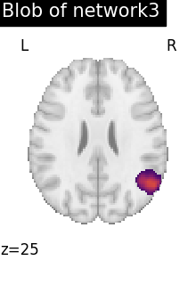
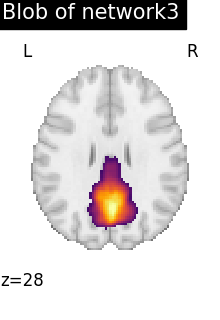
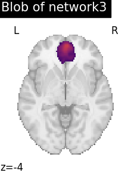
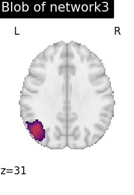
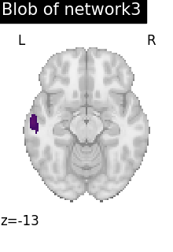

Note
Click here to download the full example code or to run this example in your browser via Binder
9.7.4. Regions Extraction of Default Mode Networks using Smith Atlas¶
This simple example shows how to extract regions from Smith atlas resting state networks.
In particular, we show how Default Mode Network regions are extracted
using nilearn.regions.RegionExtractor from regions module
Fetching the smith ICA 10 RSN by importing datasets utilities
from nilearn import datasets
smith_atlas = datasets.fetch_atlas_smith_2009()
atlas_networks = smith_atlas.rsn10
Import region extractor to extract atlas networks
from nilearn.regions import RegionExtractor
# min_region_size in voxel volume mm^3
extraction = RegionExtractor(atlas_networks, min_region_size=800,
threshold=98, thresholding_strategy='percentile')
# Just call fit() to execute region extraction procedure
extraction.fit()
regions_img = extraction.regions_img_
Visualization Show region extraction results by importing image & plotting utilities
from nilearn import plotting
from nilearn.image import index_img
from nilearn.plotting import find_xyz_cut_coords
# Showing region extraction results using 4D maps visualization tool
plotting.plot_prob_atlas(regions_img, display_mode='z', cut_coords=1,
view_type='contours', title="Regions extracted.")
# To reduce the complexity, we choose to display all the regions
# extracted from network 3
import numpy as np
DMN_network = index_img(atlas_networks, 3)
plotting.plot_stat_map(DMN_network, display_mode='z', cut_coords=1,
title='Network 3', colorbar=False)
regions_indices_network3 = np.where(np.array(extraction.index_) == 3)
for index in regions_indices_network3[0]:
cur_img = index_img(extraction.regions_img_, index)
coords = find_xyz_cut_coords(cur_img)
plotting.plot_stat_map(cur_img, display_mode='z', cut_coords=coords[2:3],
title="Blob of network3", colorbar=False)
plotting.show()
- 
- 
- 
- 
- 
- 
- 
- 
Out:
/home/circleci/miniconda3/envs/testenv/lib/python3.8/site-packages/nilearn/plotting/displays/_axes.py:71: UserWarning:
No contour levels were found within the data range.
Total running time of the script: ( 1 minutes 46.421 seconds)
Estimated memory usage: 417 MB